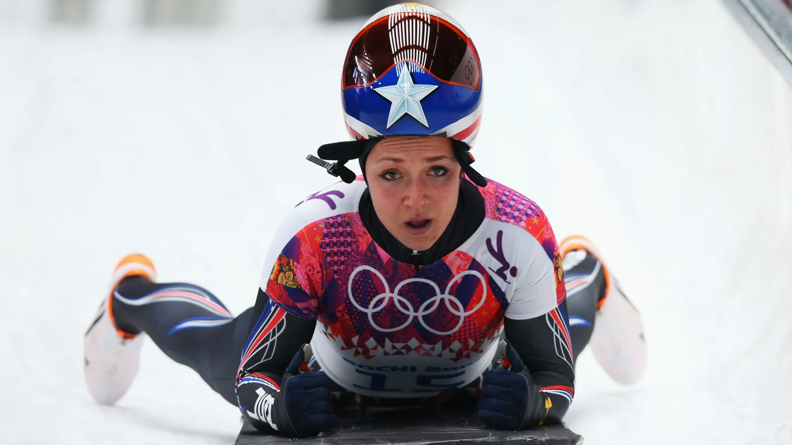
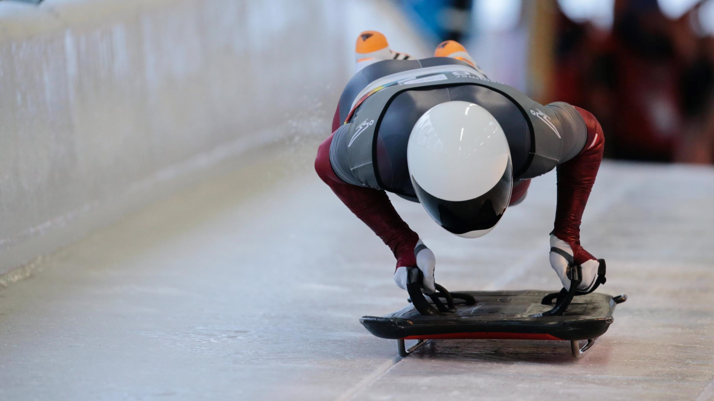
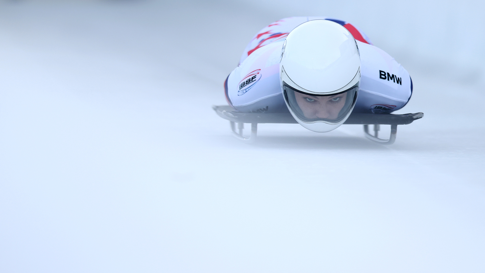
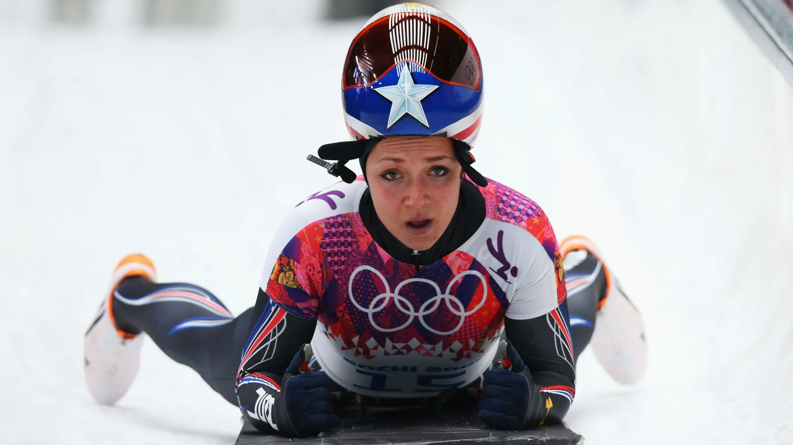
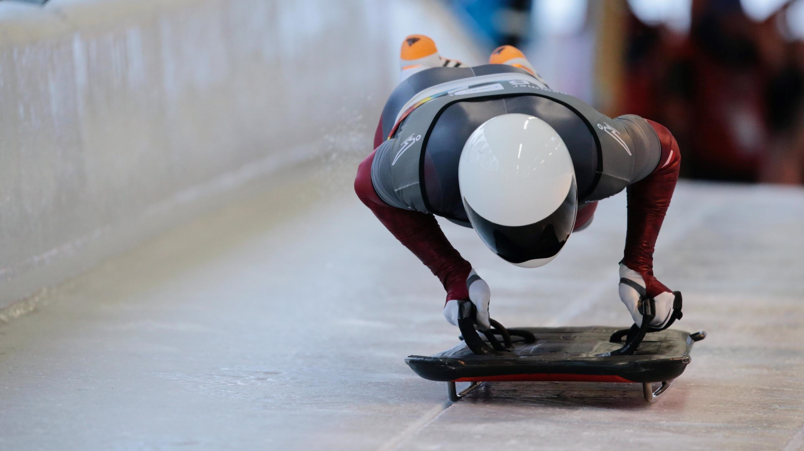
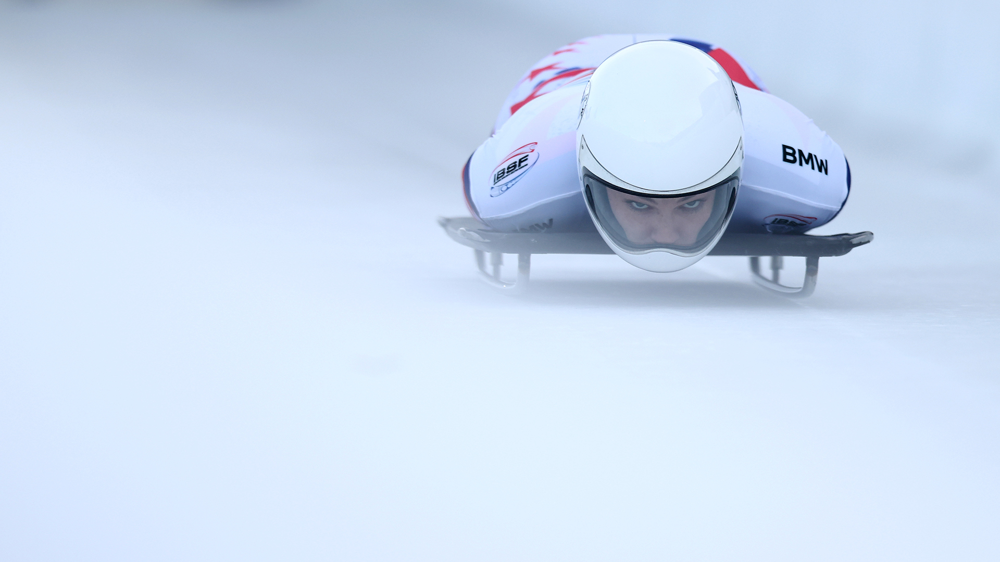
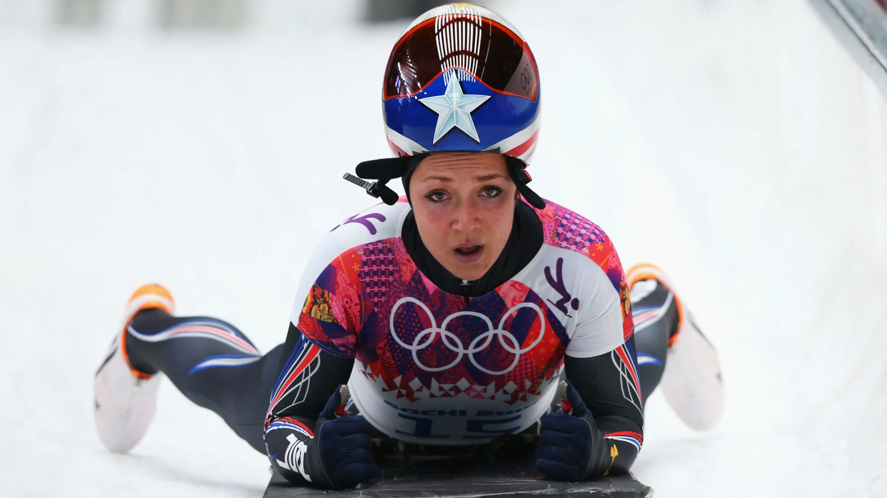
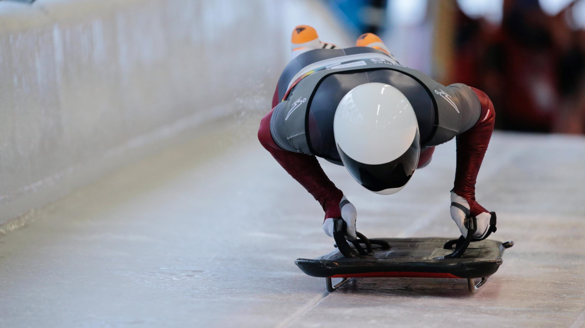
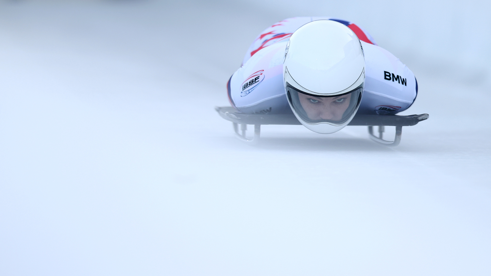

⬆



Скелето́н (англ. skeleton, букв. — «скелет, каркас») — зимовий олімпійський вид спорту, швидкісний спуск крижаною трасою на спеціальних санях без кермового керування, також називаних скелетоном (сконструйовані в 1880-і роки в Швейцарії). Спортсмен, лежачи обличчям вниз, керує скелетоном за допомогою рухів головою, натискання плечима, колінами на передні та, відповідно, задні спеціальні стерна, а також, торканням носками до льоду. Головна мета при керуванні - найменше заважати скелетону рухатися льодовим треком.
На початку XIX століття у швейцарських Альпах британські туристи зробили спроби спускатися на санях вниз по гірських засніжених схилах. У 1883 році на швейцарському гірськолижному курорті були організовані перші міжнародні змагання, що нагадують скелетон. Картинки з газет тієї епохи показують, що сани XIX століття сильно відрізнялися від сучасних.
Через кілька років англієць на прізвище Чайлд виготовив сани із смуг металу, що мають ширину близько двадцяти двох міліметрів. Саме тоді й з'явилася назва «скелетон», що з грецької перекладається як «каркас», «скелет». Тому, що самі санки, якщо їх поставити, чимось нагадували скелет людини.
Скелетон не має керма, оснащений обтяженою рамою довжиною від 80 до 120 см та шириною від 34 до 38 сантиметрів, яка встановлена на сталеві полози. Своїм спуском спортсмен, що лежить долілиць, керує за допомогою спеціальних шипів, зроблених на носках черевиків.